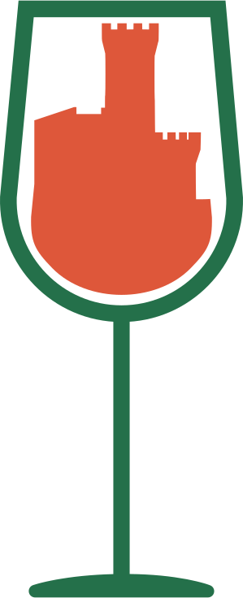

Informazioni sull'Evento
Dopo il successo della passata edizione, Associazione Pro-Loco Umbertide e Slow Food Alta Umbria APS e sono lieti di riproporre l'evento "Calici sotto la Rocca", una degustazione di vini prodotti da cantine del territorio, evento in collaborazione con L'alt(r)a Umbria.
🍔 Possibilità di mangiare in loco grazie ai punti Street Food locali.
La serata sarà interamente allietata con musica 🎶
Data: 10 Agosto 2024
Orario: Dalle ore 20:00
Luogo: Piazza del Mercato, Umbertide
Prezzo del Biglietto: 15 Euro
Il biglietto dà diritto a tasca, calice e 4 token.
I possessori di biglietto potranno acquistare ulteriori token presso la cassa (1 Token = 2,50 Euro).
I token possono essere spesi presso gli stand delle cantine ed i punti food entro le ore 00:00.
ATTENZIONE: Posti limitati! Acquista il SALTAFILA!
Le cantine
I punti food


Info e prenotazioni
Camilla: +39 389 984 8510
Ricky: +39 345 214 0050